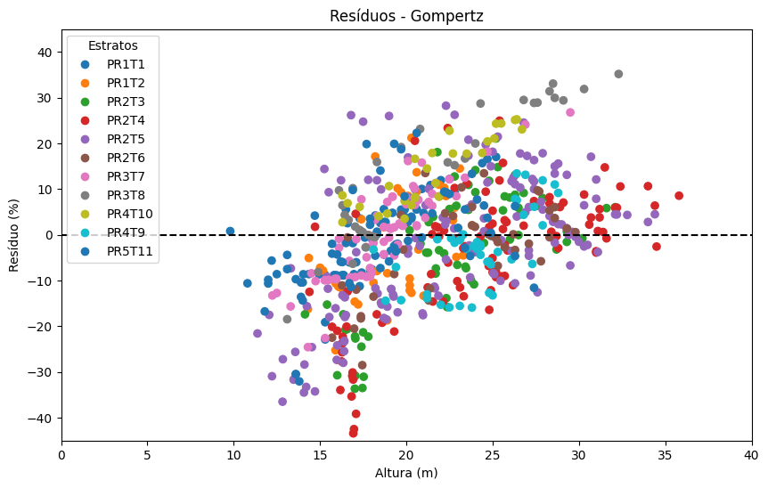

*Esta classe realiza o ajuste de equações hipsométricas para predições de altura em diferentes estratos florestais, utilizando modelos predefinidos e métricas de avaliação para comparar os resultados. A seguir, são descritos os atributos da classe:
predicoes: DataFrame contendo as predições geradas pelos modelos para cada estrato e conjunto de dados.
parametros: DataFrame contendo os parâmetros ajustados para cada modelo e estrato.
metricas_treino: DataFrame com as métricas de avaliação dos modelos no conjunto de treino, separadas por estrato.
metricas_teste: DataFrame com as métricas de avaliação dos modelos no conjunto de teste, separadas por estrato.
comparacao_modelos: DataFrame contendo a comparação dos melhores modelos por métrica e estrato.*
Type
Default
Details
dados
tabela com as informações das árvores
dap
str
nome da coluna com o diamêtro a altura do peito em cm
ht
str
nome da coluna com o diamêtro a altura do peito em m
estrato
str
None
nome da coluna com o estrato.
flag_treino
str
None
flag com a identificação dos dados de treino, esse valor deve ser 1.
proporcao_treino
float
0.7
proporção dos dados de treino caso não seja informado um flag de treino.
parametros_iniciais
dict
None
parametros iniciais para os modelos não lineares.
Inicializando
Importe os pacotes necessários:
from ForestScience.EquacoesHipsometricas import *import pandas as pd
Leitura dos dados:
dados = pd.read_csv('tabela_teste_equacoes_hipsometricas.csv')dados.head()
Chave_Parcela_Idade
Talhao
Parcela
Idade_meses
Area_parc
Cova
Fuste
Fila
Viva
Falha
DAP
Ht
Dom
Hd
dg
Gi
G
0
PR1T1-1-29
PR1T1
1
29
265.54
1
1
1
1
0
11.4
14.300000
N
16.946845
12.458966
0.010207
5.509411
1
PR1T1-1-29
PR1T1
1
29
265.54
2
1
1
1
0
13.2
16.100000
N
16.946845
12.458966
0.013685
5.509411
2
PR1T1-1-29
PR1T1
1
29
265.54
3
1
1
1
0
13.4
16.500000
N
16.946845
12.458966
0.014103
5.509411
3
PR1T1-1-29
PR1T1
1
29
265.54
4
1
1
1
0
10.9
15.226033
N
16.946845
12.458966
0.009331
5.509411
4
PR1T1-1-29
PR1T1
1
29
265.54
5
1
1
1
0
8.9
14.034194
N
16.946845
12.458966
0.006221
5.509411
Inicializa a classe EquacoesHipsometricas para ajustar equações hipsométricas não lineares. Parâmetros iniciais podem ser fornecidos para o ajuste dos modelos. No exemplo, apenas o modelo Gompertz recebe parâmetros iniciais.
hip = EquacoesHipsometricas( dados=dados, # DataFrame com os dados de entrada dap="DAP", # Coluna com o diâmetro à altura do peito ht="Ht", # Coluna com a altura total estrato="Talhao", # Coluna com o estrato (ex: talhão) proporcao_treino=0.7, # Proporção dos dados para treino (70%) parametros_iniciais={"gompertz": (24, 0.1, 0.1)}, # Parâmetros para o modelo Gompertz)
Atributos
Paramêtros
Acessando tabela com os parametros dos modelos ajustados:
hip.parametros.head()
Parametros/modelos
reta
parabola
curtis
stofells
hericksen
gompertz
logistico
chapman_richards
Estrato
0
b0
7.607188
10.562727
3.363258
1.461790
-8.104828
24.000000
590.012803
1826.187253
PR1T1
1
b1
0.755640
0.333355
-6.169616
0.547132
10.067794
0.100000
56.932890
0.000027
PR1T1
2
b2
NaN
0.014469
NaN
NaN
NaN
0.100000
0.041921
0.584054
PR1T1
3
b0
7.716645
5.246103
3.523566
1.365509
-11.230942
36.225332
31.962497
324.930305
PR1T2
4
b1
0.809061
1.150799
-7.817101
0.599685
11.596956
0.520131
3.195322
0.000678
PR1T2
Predições
Acessando tabela com as predições realizadas pelos modelos:
Realiza a predição da altura de uma nova tabela conforme os modelos informados no parametro ‘dicionario_modelos’
Type
Default
Details
dados
DataFrame
tabela com as informações das árvores
dap
str
nome da coluna com o diamêtro a altura do peito em cm
dicionario_modelos
dict
dicionário com estrato: modelo. Exemplo {‘Estrato1’: ‘curtis’}
estrato
str
None
nome da coluna com o estrato.
Returns
DataFrame
hip.predicao( dados=dados, # Passando o DataFrame contendo os dados para a função de predição dap="DAP", # Informando o nome da coluna que representa o diâmetro à altura do peito (DAP)# Passando um dicionário com as correspondências de estrato e modelo a ser utilizado dicionario_modelos={ "PR1T1": "logistico", # Modelo 'logistico' será aplicado ao estrato "PR1T1""PR1T2": "curtis", # Modelo 'curtis' será aplicado ao estrato "PR1T2""PR2T3": "gompertz", # Modelo 'gompertz' será aplicado ao estrato "PR2T3""PR2T4": "logistico", # Modelo 'logistico' será aplicado ao estrato "PR2T4""PR2T5": "logistico", # Modelo 'logistico' será aplicado ao estrato "PR2T5""PR2T6": "stofells", # Modelo 'stofells' será aplicado ao estrato "PR2T6""PR3T7": "logistico", # Modelo 'logistico' será aplicado ao estrato "PR3T7""PR3T8": "parabola", # Modelo 'parabola' será aplicado ao estrato "PR3T8""PR4T10": "reta", # Modelo 'reta' será aplicado ao estrato "PR4T10""PR4T9": "curtis", # Modelo 'curtis' será aplicado ao estrato "PR4T9""PR5T11": "logistico", # Modelo 'logistico' será aplicado ao estrato "PR5T11" }, estrato="Talhao", # Informando a coluna que define os estratos)
Gera gráficos de resíduos para avaliar o desempenho do modelo de predição de altura.
Type
Default
Details
modelo
str
Nome do modelo utilizado nas predições, como “curtis” ou “logistico”.
lista_estratos
list
None
Lista de estratos específicos para filtrar os dados. Se None, considera todos os estratos existentes.
grafico_unico
bool
False
Se True, plota os resíduos de todos os estratos em um único gráfico. Caso contrário, plota um gráfico para cada estrato.
conjunto_dados
str
None
Identificador do conjunto de dados a ser filtrado, como “treino” ou “teste”. Se None, utiliza todos os dados disponíveis.
Returns
None
Gerando um gráfico de resíduos para o modelo “gompertz” utilizando os dados de teste e exibindo todos os resíduos em um único gráfico:
hip.grafico_residuos( modelo="gompertz", # O modelo 'gompertz' será utilizado para gerar os resíduos lista_estratos=None, # Nenhum estrato específico é filtrado (todos os estratos serão considerados) grafico_unico=True, # Gera um gráfico único contendo os resíduos para todos os estratos conjunto_dados="teste"# O gráfico será gerado com base nos dados do conjunto de teste)

Gerando gráficos de resíduos individuais para os estratos especificados no parâmetro lista_estratos.
hip.grafico_residuos( modelo="gompertz", # Modelo utilizado para o cálculo dos resíduos lista_estratos=["PR1T1", "PR1T2"], # Lista de estratos para gerar os gráficos de resíduos grafico_unico=False, # Define que os gráficos serão gerados de forma individual para cada estrato conjunto_dados="teste", # Especifica o conjunto de dados a ser utilizado (teste))
Gera gráficos de tendência para avaliar o ajuste do modelo de predição de altura
Type
Default
Details
modelo
str
Nome do modelo utilizado nas predições, como “curtis” ou “logistico”.
lista_estratos
list
None
Lista de estratos específicos para filtrar os dados. Se None, considera todos os estratos existentes.
conjunto_dados
str
None
Identificador do conjunto de dados a ser filtrado, como “treino” ou “teste”. Se None, utiliza todos os dados disponíveis.
Returns
None
Gerando o gráfico de tendência para os estratos ‘PR4T10’ e ‘PR1T1’ utilizando o modelo ‘curtis’ no conjunto de dados de teste.
hip.grafico_tendencia( modelo='curtis', # Especifica o modelo a ser utilizado para gerar a tendência lista_estratos=['PR4T10'], # Define os estratos para os quais o gráfico de tendência será gerado conjunto_dados='teste'# Indica que o gráfico será gerado com os dados de teste)
Gera gráficos para análise de métricas de desempenho do modelo por estrato.
Type
Default
Details
lista_estratos
list
None
Lista de estratos a serem analisados. Se None, utiliza todos os estratos disponíveis nos dados.
lista_metricas
list
None
Lista de métricas a serem plotadas. Se None, considera todas as métricas disponíveis.
conjunto_dados
str
teste
Conjunto de dados a ser analisado: “treino” ou “teste”.
Returns
None
Plotando a comparação entre as métricas RMSE e R² dos modelos para o estrato “PR1T1”
hip.grafico_metricas( lista_estratos=["PR1T1"], # Lista contendo o estrato para o qual as métricas serão geradas, neste caso "PR1T1". lista_metricas=["RMSE", "R²"] # Lista contendo as métricas que serão comparadas no gráfico, neste caso "RMSE" e "R²".)